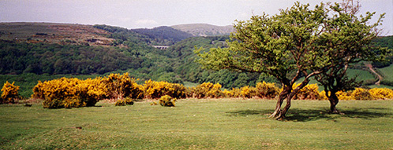

BURRATOR WOOD

Burrator Wood lies below Burrator Reservoir dam (just visible in the centre of the picture). The reservoir provides the main water supply for the city of Plymouth. The Burrator area is a favourite location for Drake H3 runs as it offers a great diversity of terrain, is close to where most of Drake's members live and is a very beautiful place to run. Burrator takes its name from a rocky outcrop hidden in the woodland to the right of the dam. The valley must have been wooded since early times as the name comes from 'beara' which is the Anglo Saxon word for a wood.
| < on back |